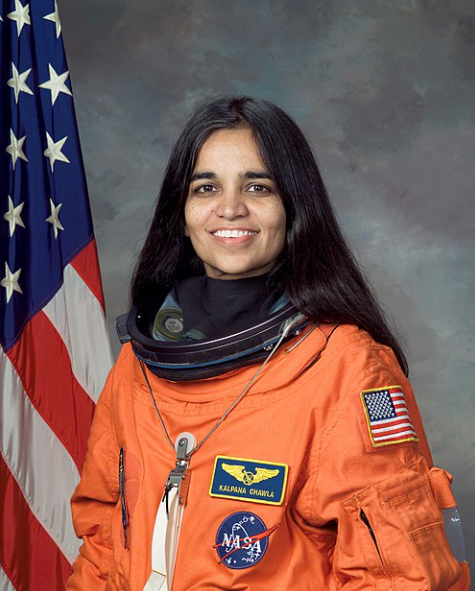

“You must enjoy the journey because whether or not you get there, you must have fun on the way.”
Explore Journey 🚀
Kalpana Chawla was an Indian-American astronaut and aerospace engineer who inspired millions by breaking barriers in space science.
“The path from dreams to success does exist.”